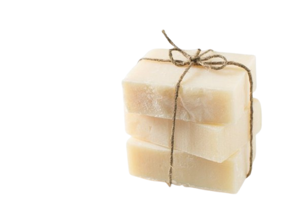

Jabones Artesanales que Cuidan tu Piel
Descubre la esencia de la naturaleza en cada barra. Elaborados con ingredientes 100% naturales, nuestros jabones te transportan a un mundo de aromas puros y texturas suaves que transforman tu rutina diaria en un momento especial.

¿Por Qué Elegir Nuestros Jabones?
100% Natural
Ingredientes puros de la naturaleza, sin químicos agresivos
Hecho a Mano
Cada barra es única, creada con cuidado y atención al detalle
Eco-Friendly
Embalaje sostenible y procesos respetuosos con el medio ambiente
Nuestro Compromiso con la Naturaleza
El Problema de la Eutrofización
La eutrofización es el enriquecimiento excesivo de un cuerpo de agua con nutrientes como fósforo y nitrógeno, principalmente por actividades humanas. Esto provoca una proliferación masiva de algas, la muerte de la vegetación acuática y un descenso drástico del oxígeno disuelto.
Enturbiamiento del agua
Crecimiento descontrolado de algas y plantas acuáticas
Falta de luz solar
La vegetación de fondo no puede realizar la fotosíntesis
Consumo de oxígeno
Bacterias consumen grandes cantidades de oxígeno
Asfixia de la vida acuática
La falta de oxígeno causa la muerte de peces y organismos
Químicos Dañinos que Evitamos
Fosfatos
Fertilizante directo que desencadena la eutrofización
Microperlas de Plástico
Microplásticos que contaminan ecosistemas acuáticos
Parabenos
Conservantes sospechosos de ser disruptores endocrinos
Triclosán
Agente antibacteriano tóxico para organismos acuáticos
Ftalatos
Químicos ocultos en "fragancias" que son disruptores endocrinos
Lauril Sulfato de Sodio (SLS)
Surfactante que produce espuma pero es fuerte irritante
Acciones Prácticas para Reducir la Contaminación
Compra Jabones Sin Fosfatos
Busca etiquetas que digan "Libre de Fosfatos" o "Biodegradable"
Opta por Jabones en Barra
Contienen menos químicos sintéticos y menos agua que los líquidos
Evita Químicos Clave
No compres productos que contengan Triclosán, Parabenos o Microplásticos
Elige Marcas Locales y Artesanales
Apoya productores locales con fórmulas transparentes y naturales
Usa Solo lo Necesario
Reduce la cantidad de jabón al mínimo necesario para limpiar
Productos Multiusos
Usa el mismo jabón natural para cuerpo y manos
Evita Usar Jabón en Cuerpos de Agua Naturales
Nunca laves directamente en ríos o lagos cuando estés al aire libre
Comparte el Código QR
Educa a otros sobre la eutrofización y la importancia de cambiar de jabón
Revisa las Etiquetas de Otros Productos
Aplica lo aprendido sobre fosfatos y parabenos a detergentes y productos de limpieza
Solicita Opciones Ecológicas
Pide a supermercados y tiendas que aumenten su inventario de productos libres de fosfatos